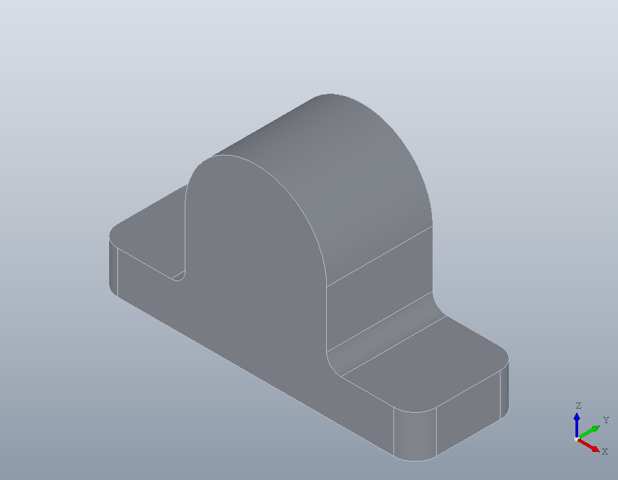
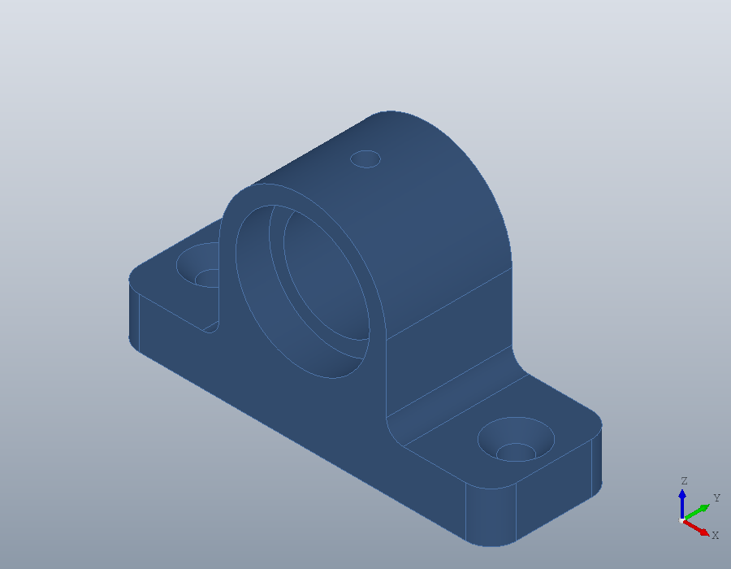
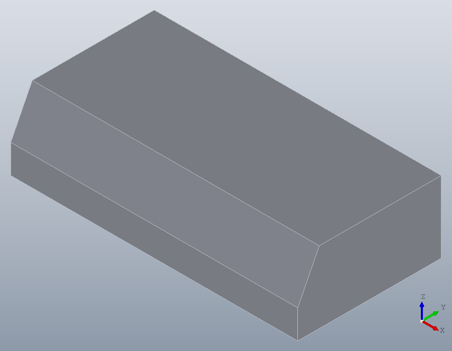
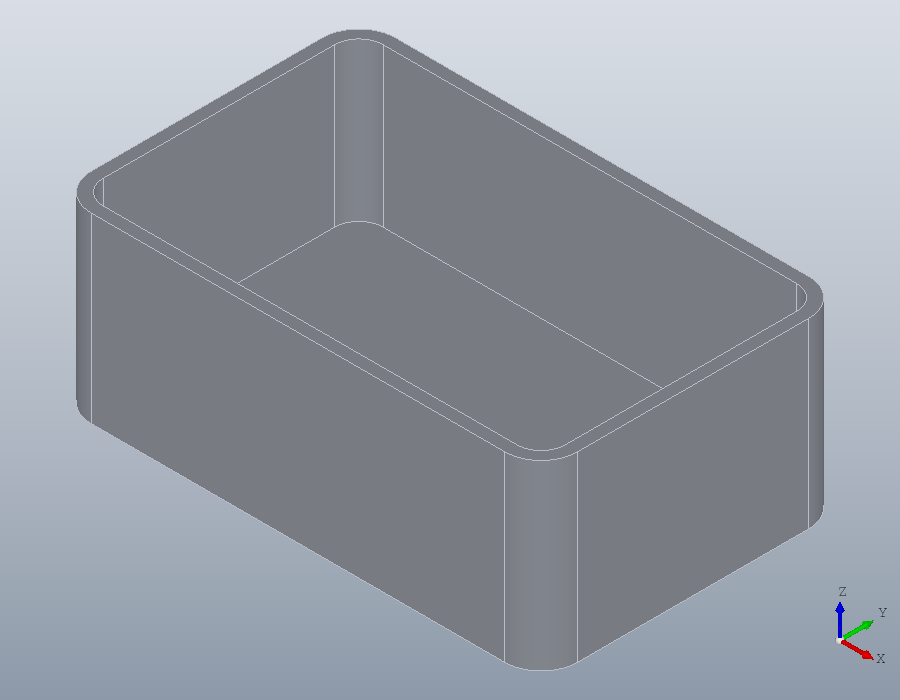

Features: holes, pockets, fillets, chamfers and shells
A bearing block made from three primitives and finished as a machinist would finish it: edges rounded and bevelled, a bearing seat bored, holes drilled and tapped, a relief cut underneath. Then a box hollowed into an enclosure.
The blank
A base plate, an upright web and a boss lying along the y axis, united into one solid. The boss is a cylinder whose UCS has its normal along -y, so it runs from the back face at y = 30 to the front at y = 0.
base = solid.box (90, 30, 12);
web = solid.box (40, 30, 32, geom.UCS ([0, 0, 1], [25, 0, 0]));
boss = solid.cylinder (20, 30, geom.UCS ([0, -1, 0], [45, 30, 32]));
S = union (base, web, boss)
show (S);S =
solid.Shape: 1 solid, 10 faces, 24 edgesChoosing edges
A feature works on edges or faces given by index, and the indices belong to the shape they came from: every operation numbers the new shape's edges afresh. So edges are chosen by what they are, just before they are used. edges with 'Direction' keeps straight edges running along a direction, and 'Within' those lying inside a box [xmin, ymin, zmin, xmax, ymax, zmax]. The four upright corners of the base:
E = edges (S, 'Direction', [0, 0, 1], 'Within', [0, 0, 0, 90, 30, 12])
S = fillet (S, E, 6);E =
1 3 11 18The two edges where the web meets the top of the base run along y at z = 12. They are inside corners, so fillet adds material there, as a casting has it.
E = edges (S, 'Direction', [0, 1, 0], 'Within', [1, 0, 12, 89, 30, 12])
S = fillet (S, E, 4);
show (S);E =
7 36
Rounding before drilling keeps the choice simple: the walls of a drilled hole bring straight edges of their own, which the same query would pick up with the corners.
Holes
hole drills from a point on the surface along 'Direction', straight down by default. The bore enters the front face and runs along y; a 'Counterbore' of 32 by 8 is the seat of a bearing 32 millimetres across.
S = hole (S, [45, 0, 32], 25, Inf, 'Direction', [0, 1, 0], ...
'Counterbore', [32, 8]);Two clearance holes for M6 screws through the base, with a countersunk seat for flat heads, and a blind hole on top of the boss for a grease nipple. Naming a thread, 'M6', drills at its tapping size, 5 millimetres; 'Tip' leaves the cone of a 118 degree twist drill at the bottom of the blind hole.
S = hole (S, [9, 15, 12; 81, 15, 12], 6.6, Inf, 'Countersink', 13);
S = hole (S, [45, 15, 52], 'M6', 10, 'Tip', 118);Choosing faces
faces chooses faces as edges chooses edges: by 'Type' of surface, by 'Normal' for flat faces, by 'Axis' for faces turned about an axis, and by 'Within'. The faces round the y axis that are cylinders are the outside of the boss, the bore and the bearing seat:
F = faces (S, 'Type', 'cylinder', 'Axis', [0, 1, 0])F =
3 11 15 16 18A chamfer of 1 millimetre breaks the rim of the bore on the back face: the circular edges at y = 30 inside a box round the bore's axis, which leaves out the larger rim of the boss.
E = edges (S, 'Type', 'circle', 'Within', [32, 30, 19, 58, 30, 45]);
S = chamfer (S, E, 1);A pocket underneath
pocket cuts a region into the part, from the region's plane against the normal of its UCS. The region goes on the underside, so its UCS faces down, out of the part, with its x axis along the world x axis. Rounded corners, as a milling cutter leaves them, come from fillet on the region, and 'Taper' leans the walls in by 10 degrees as they go deeper.
U = geom.UCS ([0, 0, -1], [45, 15, 0], [46, 15, 0]);
R = fillet (geom.Region ([-25, -8; 25, -8; 25, 8; -25, 8]), 3);
R.UCS = U;
v = volume (S);
S = pocket (S, R, 3, 'Taper', 10);
v - volume (S)ans = 2277.1The part is done, with its holes, its chamfered bore and its relief. A colour for the viewer:
S.Colour = [0.3, 0.45, 0.65];
show (S);
Angled and uneven chamfers
A chamfer can also cut back by a distance along one face at an angle to it, as a drawing calls it out with 3 x 30, or by two different distances along the two faces. The face is given by index, and every edge chamfered must bound it. On a plain block, the top edge along the front:
K = solid.box (40, 20, 10);
F = faces (K, 'Normal', [0, 0, 1]);
E = edges (K, 'Face', F, 'Within', [0, 0, 10, 40, 0, 10]);
A = chamfer (K, E, 3, F, 'Angle', 30);
volume (K) - volume (A)ans = 103.92Along the top face it cuts back 3, and down the front 3 * tand (30), so the triangle removed along the 40 millimetre edge is
0.5 * 3 * 3 * tand (30) * 40ans = 103.92Two distances instead, 3 along the top face and 6 down the front:
A = chamfer (K, E, [3, 6], F);
volume (K) - volume (A)
show (A);ans = 360.00
Shells
shell hollows a shape to walls of a given thickness and opens the faces named. A box with rounded upright edges, open at the top, with walls of 2 and a floor of 4:
B = solid.box (80, 50, 30);
B = fillet (B, edges (B, 'Direction', [0, 0, 1]), 6);
top = faces (B, 'Normal', [0, 0, 1]);
bottom = faces (B, 'Normal', [0, 0, -1]);
C = shell (B, top, 2, 'Thickness', {bottom, 4});
show (C);
The walls grow inwards, so the outside keeps the size of the box. With 'Outward', true they grow outwards instead, so the inside keeps it: the way to make a case that a part of that shape fits into.
[~, sz] = bbox (C)
O = shell (B, top, 2, 'Outward', true);
[~, sz] = bbox (O)sz =
80 50 30
sz =
84 54 32